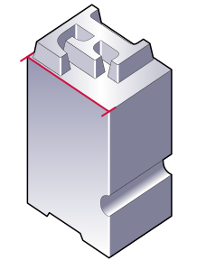
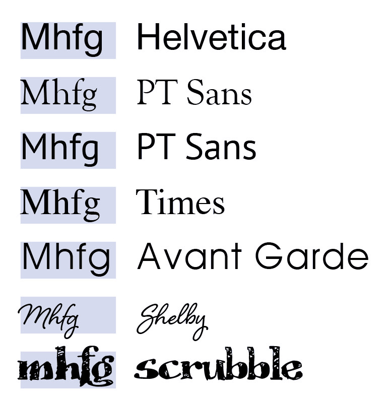

Die Schriftgrösse
Der Begriff Schriftgrösse – auch Schriftgrad, Schriftsatzmass, Kegelhöhe/Kegelstärke genannt – bezeichnet in der Typografie ein Mass für die Grösse einer Schrift. Was eigentlich irreführend ist, denn damit ist nicht die tatsächliche Buchstabengrösse gemeint. Der Grund dafür kommt aus der Zeit des Druckens mit Bleisatz. Dort mass man die Höhe des Bleikegels, also des Körpers, der das etwas kleinere, spiegelverkehrte Abbild des Buchstabens trägt.
Auf dieser schematischer Abbildung eines Bleibuchstabens ist die Schriftgrösse rot eingezeichnet.
Schriftgrössen im Desktop Publishing
Der Begriff und seine Bedeutung haben sich bis heute nicht geändert. Denn auch wenn wir heute eine Schriftgrösse im DTP-Programm festlegen, bestimmen wir noch immer genau diese Kegelhöhe.
Verschiedene Schriften in der gleichen Schriftgrösse gesetzt, können daher erhebliche Unterschiede in der effektiven Grösse aufweisen, da die Kegelausnutzung unterschiedlich ist.
Dazu kommt die unterschiedliche Grössenwirkung der Schriften, welche vor allem durch die Mittellänge, sprich die Höhe des Kleinbuchstabens, beeinflusst wird. Im Desktop-Publishing für Druck wird heute fast ausschliesslich die Masseinheit «Punkt» (pt) verwendet, welche exakt 0,3527 mm entspricht. In Punkt anzugebende Grössen können mit einem Typometer gemessen werden.
Die PT Sans, in InDesign mit 12 Punkt definiert; die graue Fläche hinter der Schrift weist eine Höhe von 12 Punkt, also von 4,233 mm auf und symbolisiert die Kegelgrösse.
Schriftarten nutzen auf unterschiedliche Arten den Platz des theoretisch zur Verfügung stehenden Kegels aus – manchmal sogar so, dass sie wie die Scrubble, über ihn hinausragen.
Schriftgrössen für Web
Für Monitore und Web gibt es nicht nur die Masseinheit Pixel (px), sondern bereits über 20 Einheiten, welche CSS bereitstellt.
Die «font-size» wird durch absolute oder relative Werte, durch numerische Werte, Prozentangaben oder Schlüsselwörter bestimmt.
Hier hängt die tatsächliche Schriftgrösse schlussendlich von der Auflösung und Grösse des Monitors, von den Einstellungen des Benutzers und auch noch vom Browser ab.
Die «font-size» legt die Schriftgrösse absolut durch numerische Werte für Pixel (z.B. 16 px) oder Punkt (12 pt) oder relativ in Prozent (120 %) oder em/rem fest.
Text- und Bildquellen:
Meine Schriftwahl: «Lora»
Lora ist eine ausgewogene zeitgenössische Serife mit Wurzeln in der Kalligraphie. Es ist eine Textschrift mit mässigem Kontrast, die sich gut für Fliesstext eignet. Ein Absatz, der in Lora gesetzt ist, wirkt durch seine gebürsteten Kurven im Gegensatz zu den treibenden Serifen einprägsam. Technisch gesehen ist Lora für die Bildschirmdarstellung optimiert und funktioniert ebenso gut im Druck.
.fliesstext {
font-size: 1.2rem;
font-family: 'Lora', sans-serif;
font-weight:400;
color: #474545;
line-height: 1.5;
letter-spacing: 0.03em;
margin-bottom: 3rem;
}